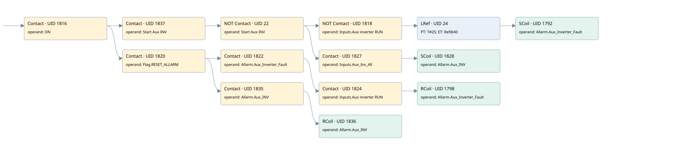

auxiliary inverter
allarms 1 · 검색 색인 순서 41 · 원본 내부 NID 추정 48
백업 PLF 원본의 3073189 바이트 위치에서 복원한 XML. 검색 문서 1821의 객체 키 161022007b62000000000000와 연결했다. 이름 해석 14/15개. 남은 RefId는 상수 또는 미해석 참조다.
연결 구조 다시 그리기
원본 Part/PCon/Wire를 이용한 연결도다. TIA 화면의 래더 배치 또는 실행 결과를 재현한 그림은 아니다. 핀 연결은 아래 표와 원본 XML을 기준으로 읽는다. 노드 위에 마우스를 두면 피연산자 이름을 볼 수 있다.

접점·코일·블록과 피연산자
| Part UID | Gate | Negated 핀 | 연결 피연산자 |
|---|---|---|---|
| 1816 | Contact | operand = ON | |
| 1837 | Contact | operand = Start Aux INV | |
| 22 | Contact | operand | operand = Start Aux INV |
| 1818 | Contact | operand | operand = Inputs.Aux inverter RUN |
| 24 | LRef | 호출 참조: RefId 309; PT = T#2S; ET = RefId (RefId 없음) / ORef UID 40 | |
| 1792 | SCoil | operand = Allarm.Aux_Inverter_Fault | |
| 1827 | Contact | operand = Inputs.Aux_Inv_All | |
| 1828 | SCoil | operand = Allarm.Aux_INV | |
| 1820 | Contact | operand = Flag.RESET_ALLARM | |
| 1822 | Contact | operand = Allarm.Aux_Inverter_Fault | |
| 1824 | Contact | operand = Inputs.Aux inverter RUN | |
| 1798 | RCoil | operand = Allarm.Aux_Inverter_Fault | |
| 1835 | Contact | operand = Allarm.Aux_INV | |
| 1836 | RCoil | operand = Allarm.Aux_INV |
접점 경로를 펼친 조건식
Contact·O/A·비교기의 원본 연결을 읽기 쉽게 펼친 보조 해석이다. POWER는 전원 레일 시작을 뜻한다. 호출 블록·에지·타이머의 내부 동작과 다중 쓰기 순서는 이 표로 실행 검증하지 않았다. 미해석 핀과 RefId는 원문 연결표에서 확인한다.
| UID | 동작 | 대상 | 원본 접점 경로 | 내용 |
|---|---|---|---|---|
| 1792 | SCoil | Allarm.Aux_Inverter_Fault | LRef UID 24.Q (블록 동작 확인) | 조건 성립 시 Set |
| 1828 | SCoil | Allarm.Aux_INV | (((ON AND Start Aux INV) AND NOT [Start Aux INV]) AND Inputs.Aux_Inv_All) | 조건 성립 시 Set |
| 1798 | RCoil | Allarm.Aux_Inverter_Fault | (((ON AND Flag.RESET_ALLARM) AND Allarm.Aux_Inverter_Fault) AND Inputs.Aux inverter RUN) | 조건 성립 시 Reset |
| 1836 | RCoil | Allarm.Aux_INV | ((ON AND Flag.RESET_ALLARM) AND Allarm.Aux_INV) | 조건 성립 시 Reset |
원본 배선 연결
| Wire UID | 동일 Wire 연결 끝점 |
|---|---|
| 1826 | Powerrail {} ↔ Part 1816.in |
| 1806 | ORef 1799 (ON) ↔ Part 1816.operand |
| 1817 | Part 1816.out ↔ Part 1837.in ↔ Part 1820.in |
| 1840 | ORef 1838 (Start Aux INV) ↔ Part 1837.operand |
| 41 | Part 1837.out ↔ Part 22.in |
| 43 | ORef 44 (Start Aux INV) ↔ Part 22.operand |
| 25 | Part 22.out ↔ Part 1818.in ↔ Part 1827.in |
| 1807 | ORef 1800 (Inputs.Aux inverter RUN) ↔ Part 1818.operand |
| 1819 | Part 1818.out ↔ Part 24.IN |
| 36 | ORef 37 (T#2S) ↔ Part 24.PT |
| 38 | Part 24.Q ↔ Part 1792.in |
| 39 | Part 24.ET ↔ ORef 40 (RefId (RefId 없음)) |
| 1809 | ORef 1801 (Allarm.Aux_Inverter_Fault) ↔ Part 1792.operand |
| 34 | ORef 35 (Inputs.Aux_Inv_All) ↔ Part 1827.operand |
| 42 | Part 1827.out ↔ Part 1828.in |
| 1834 | ORef 1830 (Allarm.Aux_INV) ↔ Part 1828.operand |
| 1810 | ORef 1802 (Flag.RESET_ALLARM) ↔ Part 1820.operand |
| 26 | Part 1820.out ↔ Part 1822.in ↔ Part 1835.in |
| 1811 | ORef 1803 (Allarm.Aux_Inverter_Fault) ↔ Part 1822.operand |
| 1823 | Part 1822.out ↔ Part 1824.in |
| 1812 | ORef 1804 (Inputs.Aux inverter RUN) ↔ Part 1824.operand |
| 1825 | Part 1824.out ↔ Part 1798.in |
| 1814 | ORef 1805 (Allarm.Aux_Inverter_Fault) ↔ Part 1798.operand |
| 31 | ORef 32 (Allarm.Aux_INV) ↔ Part 1835.operand |
| 30 | Part 1835.out ↔ Part 1836.in |
| 28 | ORef 29 (Allarm.Aux_INV) ↔ Part 1836.operand |
식별자 해석 근거 15개
| ORef UID | RefId | 이름 | IdentXmlPart 파일 | 해석 방법 |
|---|---|---|---|---|
| 1799 | 1 | ON | 0658-IdentXmlPart.xml | UID/RID + search-text + NID agreement |
| 1838 | 236 | Start Aux INV | 0658-IdentXmlPart.xml | UID/RID + search-text + NID agreement |
| 44 | 236 | Start Aux INV | 0658-IdentXmlPart.xml | UID/RID + search-text + NID agreement |
| 1800 | 307 | Inputs.Aux inverter RUN | 0657-IdentXmlPart.xml | UID/RID + search-text + NID agreement |
| 37 | 311 | T#2S | 0656-IdentXmlPart.xml | literal candidate: UID/RID/NID + nearby named declarations + search-text agreement |
| 40 | (RefId 없음) | 미해석 RefId | 식별 선언 원본 참조 | 미해석 |
| 1801 | 204 | Allarm.Aux_Inverter_Fault | 0657-IdentXmlPart.xml | UID/RID + search-text + NID agreement |
| 35 | 308 | Inputs.Aux_Inv_All | 0657-IdentXmlPart.xml | UID/RID + search-text + NID agreement |
| 1830 | 238 | Allarm.Aux_INV | 0657-IdentXmlPart.xml | UID/RID + search-text + NID agreement |
| 1802 | 13 | Flag.RESET_ALLARM | 0657-IdentXmlPart.xml | UID/RID + search-text + NID agreement |
| 1803 | 204 | Allarm.Aux_Inverter_Fault | 0657-IdentXmlPart.xml | UID/RID + search-text + NID agreement |
| 1804 | 307 | Inputs.Aux inverter RUN | 0657-IdentXmlPart.xml | UID/RID + search-text + NID agreement |
| 1805 | 204 | Allarm.Aux_Inverter_Fault | 0657-IdentXmlPart.xml | UID/RID + search-text + NID agreement |
| 32 | 238 | Allarm.Aux_INV | 0657-IdentXmlPart.xml | UID/RID + search-text + NID agreement |
| 29 | 238 | Allarm.Aux_INV | 0657-IdentXmlPart.xml | UID/RID + search-text + NID agreement |
검색 코드 보조 자료
참조 명칭을 찾기 위한 자료이며 실행 순서나 AND/OR 관계는 위 연결표로 확인한다.
"on" "start aux inv" "start aux inv" "inputs"."aux inverter run" ton "aux_inv_run" t#2s "allarm".aux_inverter_fault "flag".reset_allarm "allarm".aux_inverter_fault "inputs"."aux inverter run" "allarm".aux_inverter_fault "allarm".aux_inv "allarm".aux_inv "inputs".aux_inv_all "allarm".aux_inv